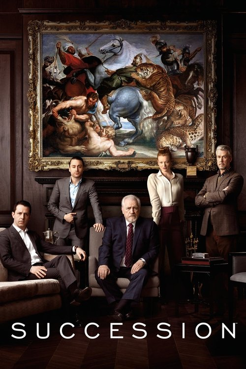

TV Show
Succession
It doesn't ask us to admire these people or hate them. It asks us to recognize them.
Succession was the show that exposed me to how simple and how complex family dynamics can be at the same time. Almost every character feels familiar, like someone we already know. They think like ordinary people, but their motives are made visible by wealth. Money doesn't change them; it removes the need to hide.
They can pretend to be friends, allies, even lovers, and discard those roles the moment they stop being useful. Intimacy is transactional, loyalty is temporary, and affection is just another tool. The relationships feel broad and layered because they mirror real human behavior, only amplified by power.
Every child in the Roy family carries a sense of entitlement. It's tempting to blame this on second-generation wealth, but the show suggests something more uncomfortable: entitlement isn't inherited, it's human. Wealth only gives it permission to act without consequences.
Greg is the clearest example of this. He starts as harmless, almost pathetic, but his banality is exactly what makes him dangerous. He survives by attaching himself to stronger figures, absorbing protection while offering nothing of substance in return. Over time, the parasite grows. Quietly, it becomes large enough to damage the house itself.
Succession works because it refuses to moralize. It doesn't ask us to admire these people or hate them. It asks us to recognize them. Strip away the money, and what's left is a family driven by fear, insecurity, and the need to win, even when winning means destroying the thing they're fighting for.